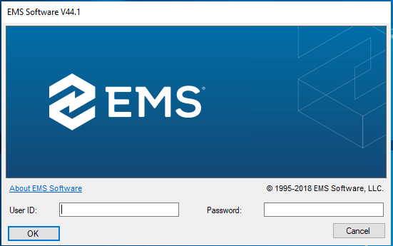
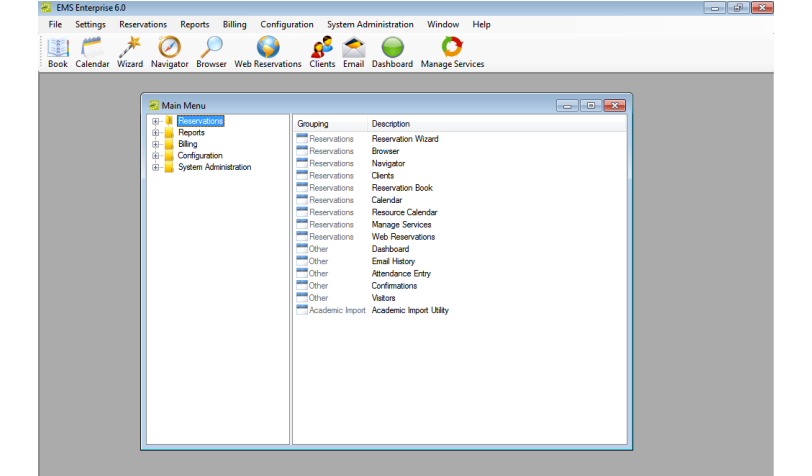
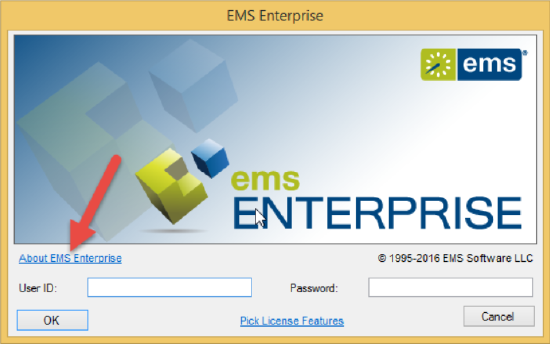
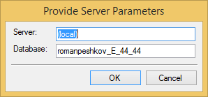

After EMS has been installed on your desktop, a shortcut icon for the application is placed on your desktop. An option for the application is also available from your Start menu. You can double-click the desktop icon to launch the EMS application, or you can select the option from your Start menu.
Access the EMS application in either of the following ways:
On your desktop, double-click the EMS icon.
Open the Windows Start menu, in the Search field, enter EMS and then select the EMS option.
The application launches and prompts you to enter your credentials.

EMS Login Dialog Box
If you are the first person to log in to the EMS application at your organization, a dialog box opens where you enter the information for the login server and database that your application is accessing. (These are set up during implementation.) After you enter this information, the EMS Login dialog box opens.
Enter your credentials in the User ID and Password fields.
Click OK.
The

If you have an

This launches a pop-up window where you can choose a different server and database.

For security reasons, after you log in to EMS the first time using “admin” as both the username and password, at a minimum, we recommend that you change the account password. Ideally, you should create an entirely new administrator account with a new username and password. See Also: Configure Users.